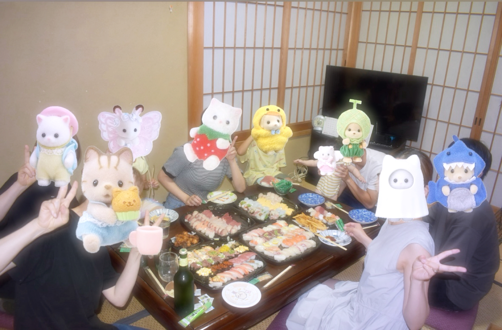
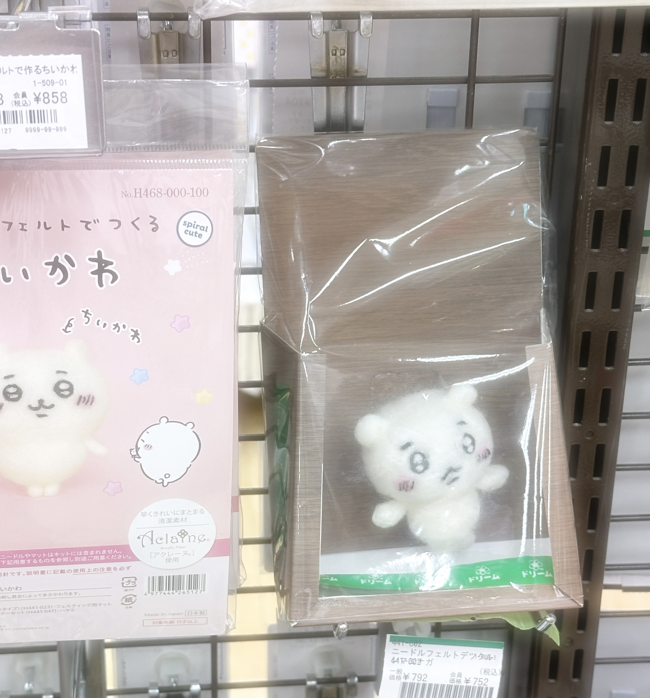
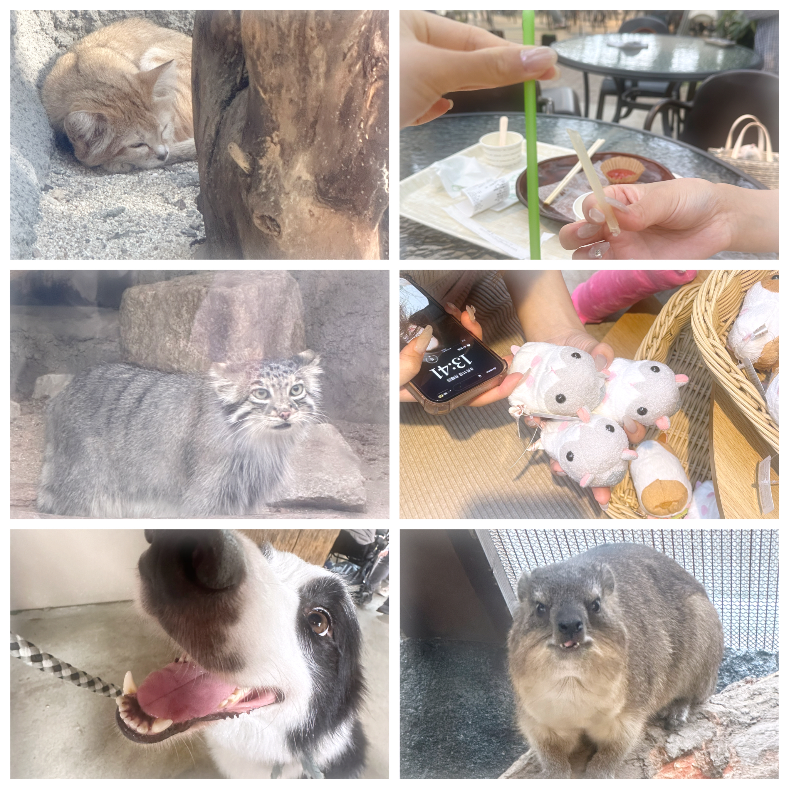
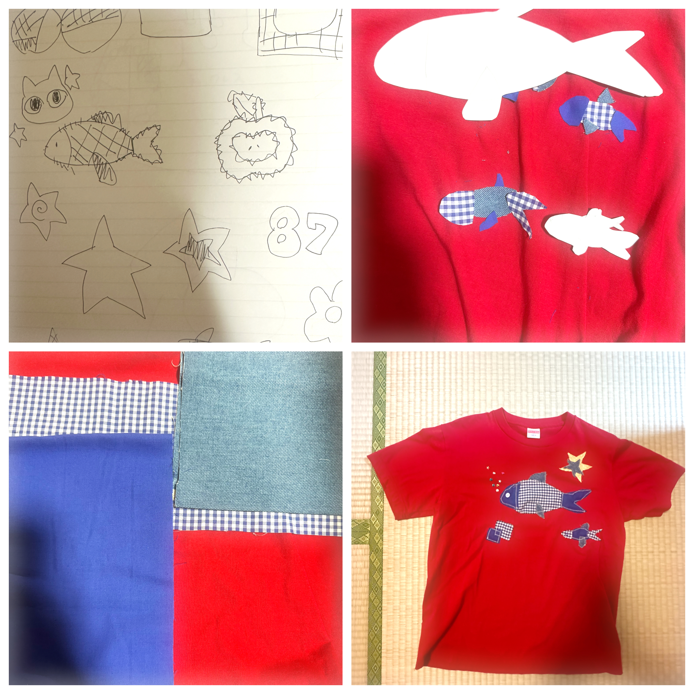
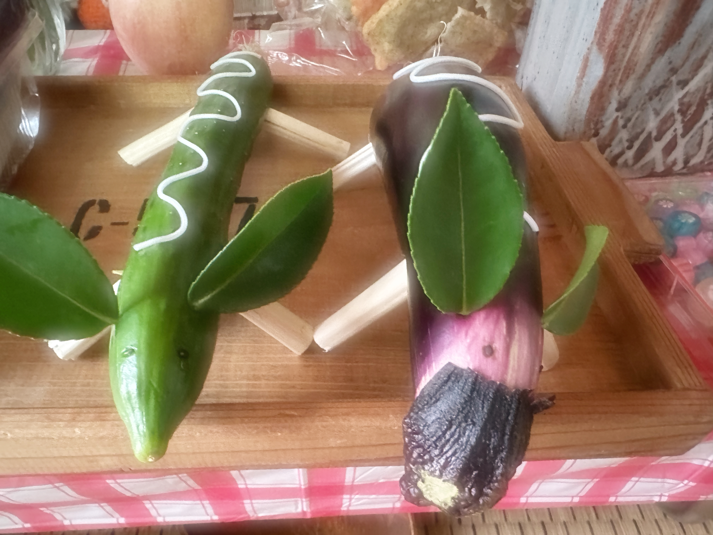
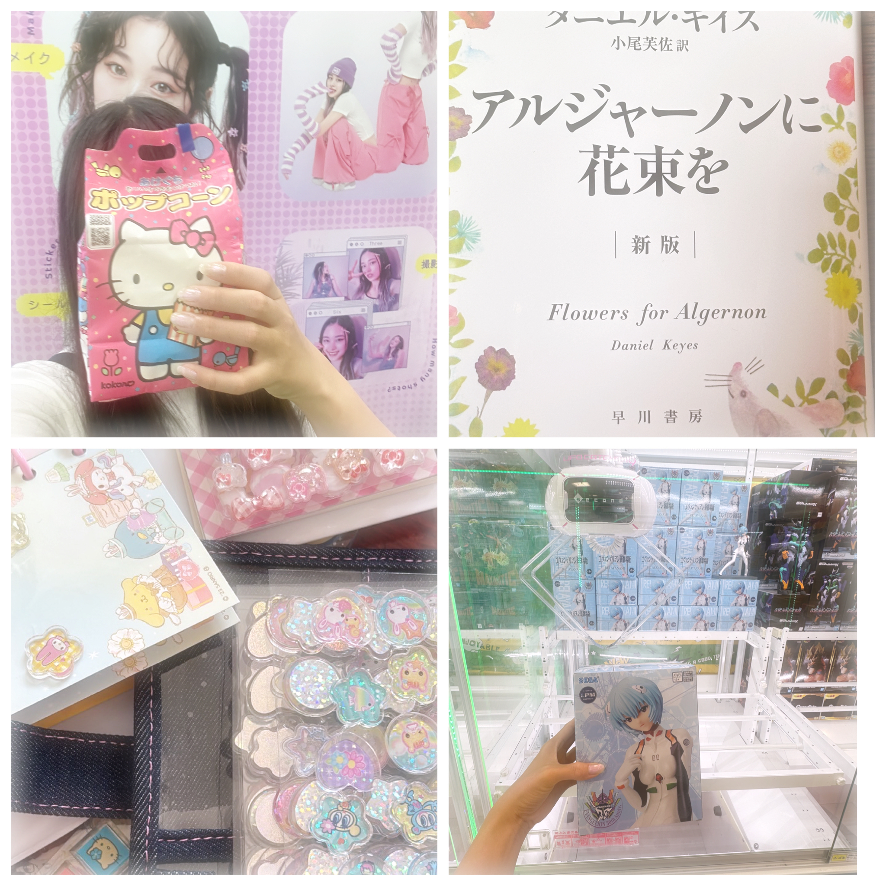
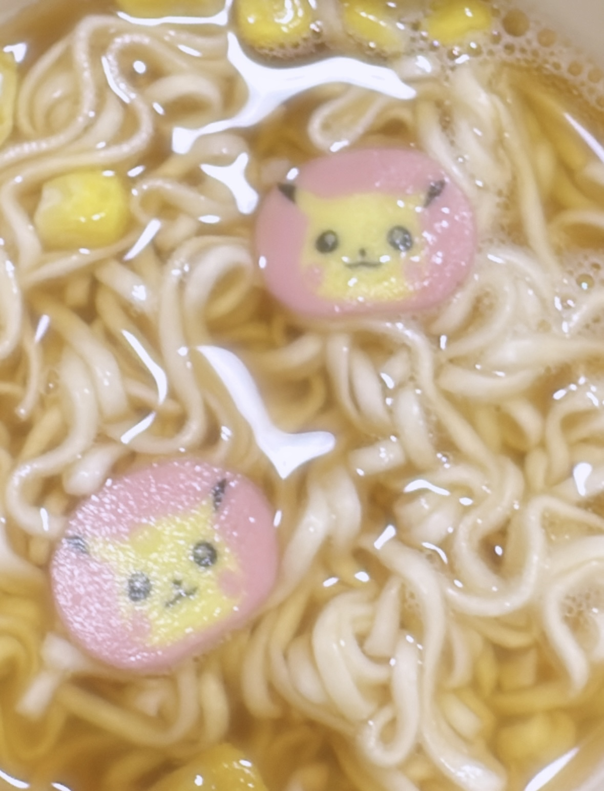
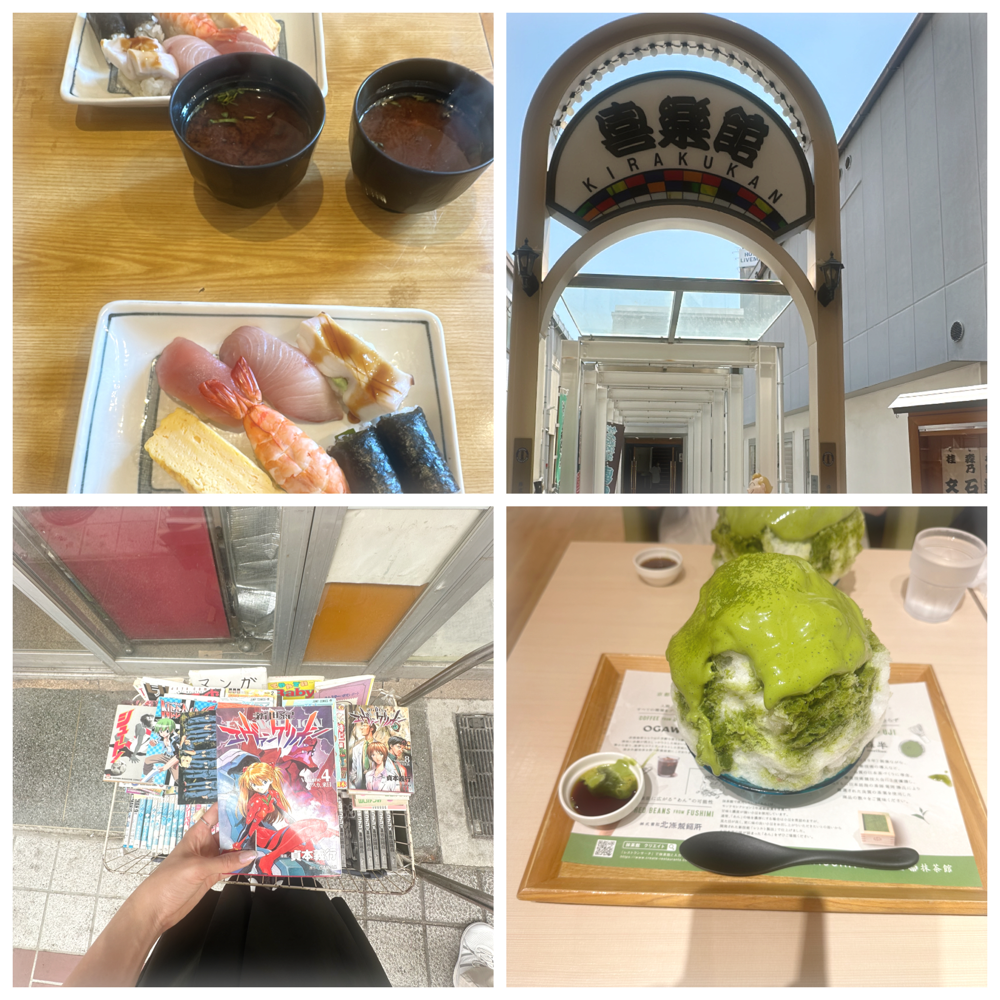
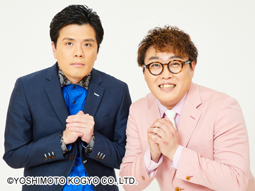

1日目
家族で♩
今日は少し早いですが、お盆なので お坊さんに来てもらってお経をあげてもらいました🙏✨
これは我が家の恒例行事で、毎年お経を挙げてもらったあとに親戚みんなでご飯を食べて楽しい時間を過ごします♩
お姉ちゃんの娘チャマ（生後半年👶💕）にも会えました!
ほんmoney愛おしい存在♡

ごはん🍣
2日目
２日目にしてすることがない♩
今日は予定がなかったので、のんびりネイルをしました💅
＜追記＞２日で取れました🌟
そのあとは、アマプラで猫ちゃんが主役の「Flow」を鑑賞🐈🎬
急に「服を作りたい！」という気持ちがエグく、車を走らせ古着屋さんと手芸屋さんに行き材料をゲトり速攻帰宅🚗💨
そのあと（どんな服にしようかな〜♩）とPinterestをあさっていると凄まじい速さで時間が過ぎていったので作るのは後日にして就寝爆睡〜〜💤

オリジナリティあふれるちいかわ🧶🪡
3日目
神戸どうぶつ王国
今日はお友達と一緒に神戸動物王国へおでかけしました♩
たくさんのかわいい動物たちに会えて、とっても癒されました♡犬にもさわれてHLLSPD🌟
（アンミカ用語：ハッピー、ラッキー、ラブ、スマイル、ピース、ドリーム）
お昼ごはんも園内で食べたのですが、ドリンクについてきたストローがお米ストローでした！
（お米とコーンスターチでできていて食べられるストローみたいです）
ふと横を見たら、友達が「クセになる、全部食べたらゴミが減って自然環境にも貢献や！」と言って全部食べていました(^-^)
私も試しにちょっとかじってみるとかすかにお米の味がしたのですが硬いので全部食べる気にはならなかったですT^T
そもあとは映画館に行き『事故物件ゾク恐い間取り』をみました〜！
ほぼ貸切で私たちとカップルの二組だったのですが見終わった後に友達が『貸切でよかったな〜！』というので『え？カップルおったやん』 というと『いや、私らだけやったやん…』と言われたのですぐにうしろを振り返って確認すると誰もいなかったのが一番のホラーでした🎵

動物たちと食べかけのお米ストローと３つもぬいぐるみいらんよといい買うのを阻止したぬいぐるみ
4日目
洋服ちくちく♩
今日は前に買っておいた素材でTシャツをリメイクしました!🪡
久しぶりにミシンを使ったので、お母さんに教えてもらいながら作業しましたが無事に完成して嬉しかったです♡
そのあとは、ずっと観たかった映画 「教皇選挙」 をアマプラで視聴🎬
ゆったりおうち時間を満喫できました♩

5日目
本格的にお盆♩
今日からお盆なので早速、お墓参りに行き掃除をしました♩
そのあとは毎年恒例の精霊馬とお団子を作りました！🥒🍆🍡
きゅうりと茄子が割れないようにしっかり立ってくれるように慎重に作りました♩
さらに、久しぶりに シール帳も作ったので次に親戚の子と会ったときは一緒にシール交換をして遊びたいと思います📒🎀✨

6日目
親戚と！
今日は 親戚のおじさんが久しぶりに帰ってきたので、会いに行きました♩
いとこと従姉妹の子供と一緒にゲームセンターに行き、UFOキャッチャーで欲しかったエヴァンゲリオン綾波のフィギュアもゲットできました〜!
みんなでプリクラも撮りましたが最近のプリクラの進化が凄過ぎて全員青鬼みたいな目になってました^ - ^
そのあと本屋さんにも行き、おじさんのおすすめの本 『アルジャーノンに花束を』 を買ってもらいました〜！
めちゃくちゃ嬉しいので帰ったら早速読みたいです💖
そして、従姉妹の子供たちとシール交換をして遊んだり、おばあちゃんの家でみんなでご飯を食べたり本当に楽しくて幸せな1日になりました💓

7日目
シール交換激ハマり♩
今日は『早速アルジャーノンに花束を』を読み進んでいたら従姉妹の子供がやってきて昨日したばっかのシール交換をしました♩
どうやら私が持っているシールのレートが高いので交換したいみたいです(^｡^)
可愛いのでなんぼでもあげちゃいますね♫
そこからおやつタイムになりチーズケーキやマフィンなどを食べました🧁
そして、久しぶりに ポケモンラーメン が食べたくなったので買いに行きました♩
おいしい上に可愛いピカチュウが入ってて幸せな気持ちになりました🐭⚡️

8日目
落語♩
今日は落語を見に新開地の喜楽館に行きました♩
お笑いライブは何度か行ったことがあるのですが落語はまだ見に行ったことがないのでとても楽しみです！
始まるまでに時間があるので、新開地の『源八寿し』でランチを食べたのですが、約500円で6種類のお寿司を食べれて味もとっても美味しかったのでめちゃくちゃおすすめです!🌟
商店街の中に古本屋さんがありエヴァンゲリオンの漫画が置いてあったので少しだけ立ち読みしてしまいました〜！
エヴァは本当に絵が可愛いですね♩
落語は２時間弱で８人の噺家さんたちがお話を聞かせてくれたのですがとても面白くて、帰りの電車で落語のチケットを購入してしまいました(^-^)
次の舞台も楽しみです♡
その後、Umieの抹茶館にかき氷を食べに行きました!
暑い日のかき氷はとても最高ですね🍧

9日目
ぐだぐだ
今日はお掃除をしました🧹🧼
部屋がきれいになると嬉しいですね🫧
そして溜まっていたバラエティー番組の録画もたくさん見ました♩
賛否あるかと思いますが、私はやっぱりYouTuberよりお笑い芸人の方が好きです♡
最後の1日はぐだぐだして終わってしまいましたが、明日からの学校頑張りたいと思います⤴⤴
